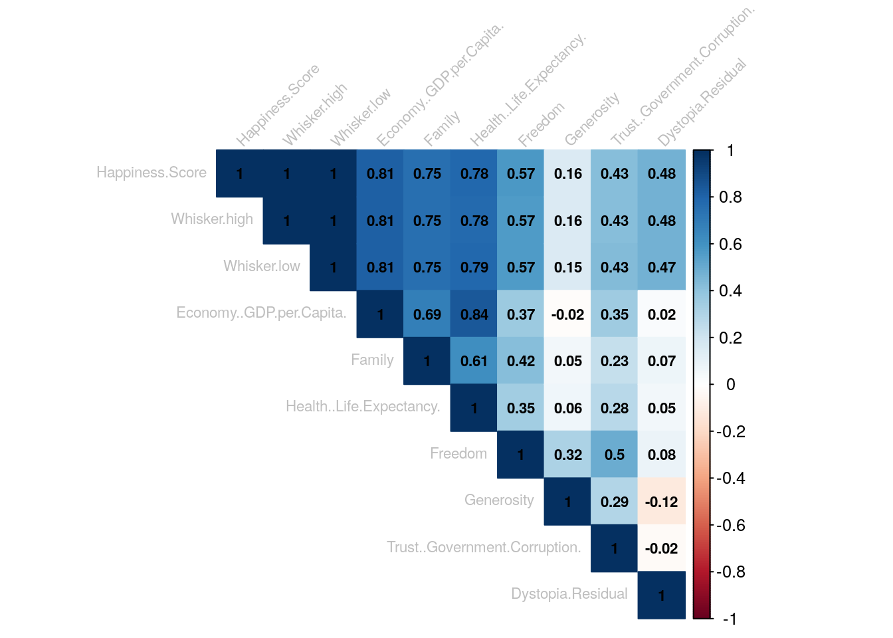
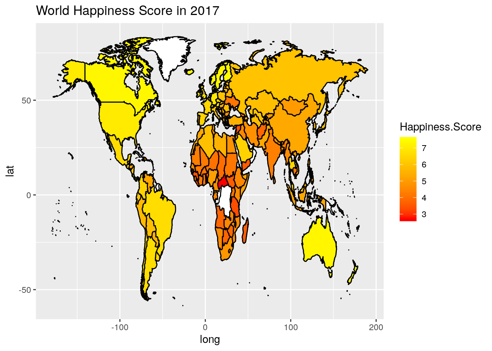
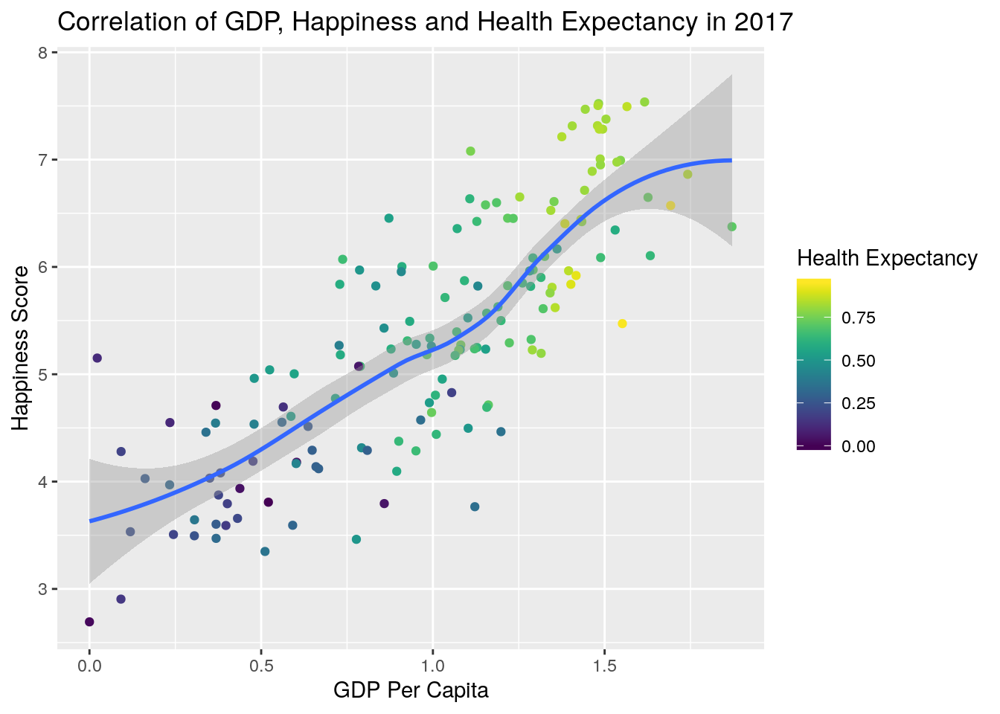

Happiness is a very subjective term. Trying to quantify and standardize it is a fool’s task. The World Happiness Score as provided by citizens of different contries as part of a servey is a standardized although still subjective measure. This won’t stop us from trying to analyze it though!
Now with the help of some graphics I will attempt to explore the World Happiness Score in 2017 and the possible factors influencing it.

This correlation plot shows us that Economic GDP per Capita score tends to have the biggest impact on happiness score and the Health score has the second biggest impact. Correlation between GDP per Capita and Happiness Score is at 0,81, and correlation even reaches 0,84 when we compare GDP per Capita to Health Life Expectancy.
Whiskers are the minimum and maximum deviations of the happiness score per country, excluding the outliers. It makes sense that they correlate, although a correlation of 1 might not be realistic. It does not help the analysis and should be ignored.
It seems that mostly European countries have the higher scores and Afican countries tend to have the lower scores. We will follow this up with a Worldmap plot to verify this assumption.

The world map shows us that North America, Australia, and Northern/ Western Europe rank highest. South American and Asian countries tend to have much more divers scores. While some crysis-stricken countries in the African continent tend to be much lower on this scale compared to the rest of the world.

This interactive scatter plot shows that there is a strong positive correlation between GDP and Happiness. Also points are coloured by Health score, which also suggeests that Health tends to have a big impact to happiness.
In general there seems to be a positive correlation between the Health Life Expectancy of a country, it’s economic output (GDP) and the happiness of the population, which is quite obvious. Some interesting points while exploring the correlations between the different factors in the data set are: - GDP per Capita / Family and Health Life Expectancy seem to be most influencial to the happiness of a country’s citizens. - Curiously GDP per Capita and Generosity have a slightly negative correlation - this might be an outlier or an error in my methodology, but analyzing this goes beyond my R capabilities.
Furthermore looking at the map it is noticable that the majority of South American Contries tend to have proportinally higher Happiness Scores when compared to their economic prowess per capita. This might be culturally influenced.